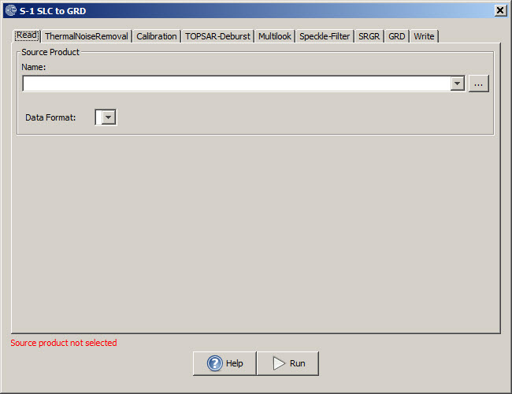

Sentinel-1 SLC to GRD
The Toolbox provides a graph which applies processing to a Sentinel-1
SLC product in order to generate a product similar to a GRD product
generated by the IPF. However, the processing applied is not identical.
This will include:
- Thermal noise removal
- Calibration
- Deburst and merge for TOPS data
- Multilooking
- Speckle filtering
- Slant Range to Ground Range conversion
- Scaling to 16 bit
- Updating metadata
For the IW and EW GRD products, all the bursts in all
sub-swaths are seamlessly merged to form a single, contiguous, ground range,
detected image.
Input
- The input to this operator should be Sentinel-1 SLC product.
Output
- The output of the operator is a GRD like product.
Parameters Used
- For the parameters used for each operator in the graph, user is referred to the on-line help of the
corresponding operator.

GRD
The GRD Post Processing operator updates the product type, product name and other file ids in the metadata to make
it a true GRD product.
Input
- The input to this operator should be the GRD product generated by the S-1 SLC to GRD operator.
Output
- The output of the operator is the same product with the metadata and product name updated.
Parameters Used